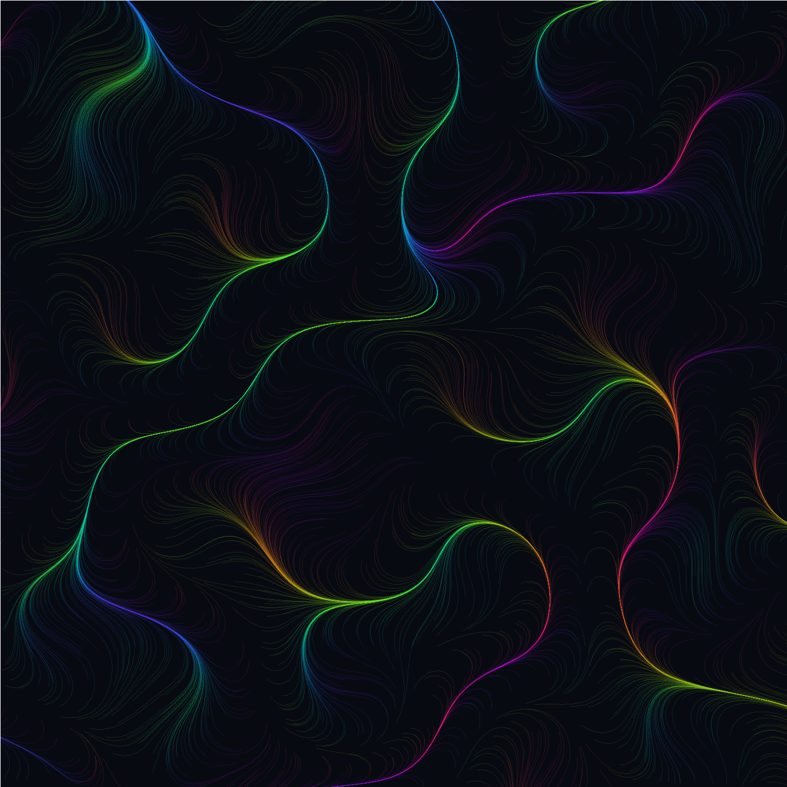

2600 particles dropped into a field that's just a sum of sines, each one stepping along the local angle for 260 steps. no noise library, no physics: the swirls are where the sines agree. color is the direction they're heading, so the rainbows are curvature, not paint.